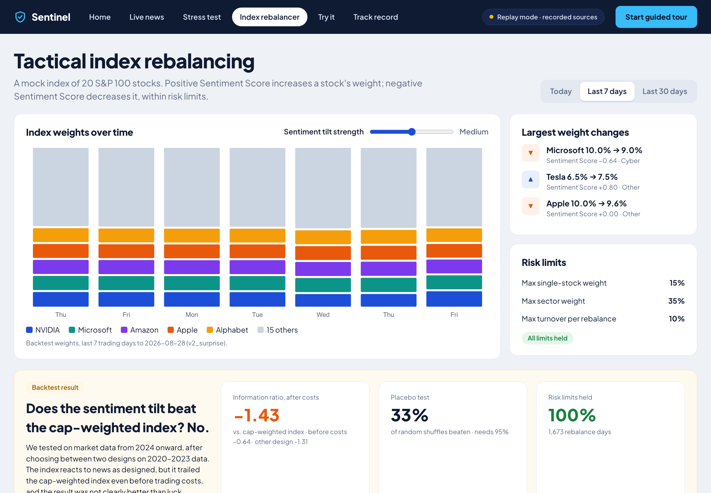

S&P Global × CRISIL Campus Hackathon 2026 · AI/NLP Risk Engine · Problem & solution
Sentinel.
Market-moving risk arrives as text, in many languages, faster than people can read it.
Sentinel turns news and social posts into sentiment, event and impact signals and feeds
both downstream modules: an index rebalancer (A) and a bank stress test (B).
The problem: four questions, minutes after a story breaks
Who is affected: which company or country?
How does it read: sentiment −1 … +1?
What kind of event: credit, geopolitical, M&A …?
How big, and what does it do to our book?
Keyword alerts miss context, skip non-English sources and cannot size the hit.
The solution
9 keyless sources (GDELT in 65 languages, RSS, SEC 8-K, central banks, social); every source has a recorded replay twin, so it never goes dark.
Fine-tuned models (FinBERT, XLM-R, mDeBERTa NLI) score sentiment per entity and 12 event classes; 284 entities, 9.7k aliases in 20+ languages.
Impact Score 1–10 learned from the market: 74,964 past news items labelled with the abnormal move that followed.
Acts on it: corroborated alerts re-price a $10 bn bank book; sentiment tilts a 20-stock index within hard limits.
✓ ≥ 2 sources
9, news + social
✓ Sentiment −1…1
per entity, calibrated
✓ Event class
12 classes
✓ Impact 1–10
learned, with range
✓ API + files
REST, WebSocket, JSONL
✓ Modules
both A and B built
Yugh Juneja · VIT · github.com/yugh88/VIT_YughJuneja_Hackathon · runs offline: make setup && make demo1 / 7
Architecture
Five stages, one structured signal, three consumers
Output via REST · WebSocket · JSONL · Parquet. More diagrams in docs/diagrams/: data flow, Module A, Module B, impact training, wireframe2 / 7
NLP engine results · held-out test data only
Reads finance text well; impact scores track real moves
9 classes, n = 4,117 · train/test near-duplicates removed
✓ target ≥ 0.80
0.76
Credit-event precision
150 new 2025–26 headlines, scored once · recall 0.93 · was 0.58
✗ target 0.80 · recall ✓ ≥ 0.90
1.61×
Lift at Impact ≥ 8
share of top-decile real moves vs chance (16.8% vs 10.4%)
30,153 out-of-sample items
0.65
Native-language sentiment
300 new headlines, 10 languages, scored once · was 0.54 · NLI blend + Hinglish
✗ target 0.75 · CI 0.58–0.71
Higher Impact Score → bigger real moves
Mean realised move (in σ of the stock's own residual volatility) by predicted score · 2024+ test
Score 10 moves 2.3× more than score 1. Scores 1–8 are nearly flat (an honest limitation).
Every number is regenerated by a script → docs/model_card.md · v2 sets were frozen (hashed) before any experiment and scored once3 / 7
Module B · stress test · replay of 24 Feb 2022 (real recorded news, real models)
From raw headlines to a capital number for the risk committee, automatically
11,520 articles · 00:00–12:00 UTC
3,107 risk signals
linked to a company or country
23 tests
corroborated, merged per 6 h cluster
8 / 9
top-ranked alerts are war clusters
Early, multilingual: the first tests fired at 00:00 UTC from Russian-language headlines.
Sized, not just flagged: each alert reports loss, ΔEL, ΔRWA, ΔCET1, 99% VaR and 97.5% ES. Top alert (Ukraine): $10 bn → $9.94 bn, CET1 12.0% → 9.8%, 99% VaR $160 m. Losses hit capital after 25% tax; rating migration lifts RWA, capped at +15%.
Explainable: every score carries its evidence sentence, drivers and a likely range, which suits model-risk review.
Fast: each test re-prices 300 positions and runs a 10,000-path Monte Carlo in about 0.2 s.
Scenarios: Macro US (8) −$321 m, CET1 12.0% → 6.9%, VaR $428 m · Geopolitical Russia (10) −$88 m, → 9.5% · Credit US banks (10) −$22 m, → 10.2%4 / 7
Module A · tactical index rebalancing
The same signal steers a 20-stock index, inside hard risk limits

1
Start from market caps
20 S&P 100 stocks, float-adjusted weights, each capped at 10%.
2
Tilt on sentiment surprise
w = base × clip(exp(κ·S), 0.5, 2); S is today's sentiment minus the stock's own 30-day mean, from signals with impact ≥ 6.
3
Enforce limits every time
≤ 15% per name, ≥ 1% floor, ≤ 35% per sector, ≤ 10% turnover; rebalance on impact ≥ 5 or every 15 min.
100%
of 1,673 rebalance days within every limit
IR −1.43
net of 10 bp costs, 2024 → Aug 2026, run once
33%
of date-shuffled placebos beaten (bar: 95%)
Verdict: no proven edge after costs, and the dashboard says so. Module A ships as a transparent, controlled consumer of the signal, not as an alpha claim. Both versions (sentiment, surprise) were written down before the backtest.
Flow: docs/diagrams/module-a-flow.png · weights over 7 and 30 days, tilt slider, pause/resume on the dashboard5 / 7
Results & what we learned · every miss published
Core accuracy targets met; the misses are measured, not hidden
Target
Goal
Measured
English sentiment macro-F1
≥ 0.85
0.851
✓ met
Event macro-F1
≥ 0.80
0.818
✓ met
Credit-event precision / recall
0.80 / 0.90
0.76 / 0.93
½ recall met
Native-language sentiment F1
≥ 0.75
0.54 → 0.65
✗ missed
Impact Spearman ρ (2024+)
≥ 0.25
0.115 (heuristic 0.043)
✗ missed
Throughput per CPU worker
150 docs/s
17.6 docs/s
✗ missed
Module A beats 95% of placebos
net IR > 0
IR −1.43 · 33%
✗ no edge
What we learned
Machine-translated tests flatter. A translated test said 0.83 for other languages; real native headlines said 0.53.
Translate-test did not help sentiment; blending a multilingual NLI model did (dev 0.54 → 0.64), with no translation at run time.
Precision comes from hard negatives. Rules for analyst notes, aggregates and recoveries lifted credit precision on new data (0.58 → 0.76); the cost: recall on the older 150-headline set fell from 1.00 to 0.92.
Capital needs the full chain. After-tax losses and capped RWA cut the replay median ΔCET1 from −571 to −273 bp; the cap binds every time, so rating migration is too aggressive.
Not every speed-up is one: CoreML was 20× slower than CPU on these models.
🔎
How we kept score honest: new evaluation sets were built blind, hashed and frozen before any experiment;
every change was chosen on dev data only and the frozen tests were scored once, old vs new, with 95% confidence intervals.
Details: docs/model_card.md · decision log docs/DECISIONS.md · old vs new: docs/eval/v2/final.json6 / 7
Scale & next steps
CPU-only today, a clear path to 10 million documents a day
17.6
docs/s per 8-thread CPU worker on new text (33.1 with repeats, via the logits cache)
44 ms
p95 single-document latency (was 177 ms before the cache)
≥ 64%
of documents exit before any model: no tracked entity or a near-duplicate
≈ 7
CPU workers for 10 M docs/day at average load (116 docs/s); about 66 at a 10× peak
Built to scale out
Stateless scoring workers behind a queue; sources, NLP and modules talk through one signal schema (REST, WebSocket, JSONL).
Production profile in docker-compose: Redpanda, TimescaleDB, Redis (adapters on the roadmap).
Circuit breakers fail over to replay twins; the demo and the tests run with zero network access.
Next steps
Human-labelled native-language data to close the 0.65 → 0.75 gap.
Calibrate rating migration (the RWA cap binds in every test) and plug real exposure feeds in place of the synthetic book.
Static INT8 or GPU workers behind an accuracy gate; intraday impact labels.
Human spot-check of the AI-annotated evaluation sets.
Assumptions: synthetic seeded bank book; evaluation sets AI-annotated blind in two passes; recorded tweets stand in for X (no keyless API)7 / 7